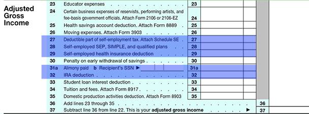

Once gross income is identified, the next step is to derive adjusted gross income (AGI) through a series of deductions. This is done in the bottom section of the front page of Form 1040, which can be viewed on this page. These adjustments are often referred to as "adjustments FOR AGI" as they are adjustments that are made to derive AGI. Adjustments that will be made on the back of Form 1040, after AGI has been derived, are frequently referred to as "adjustments FROM AGI."
Basic Tax Formula
Gross Income
Less adjustments for Adjusted Gross Income (AGI)
Adjusted Gross Income
Less the greater of:
a) Standard deduction or
b) Total itemized deductions
Less Personal and Dependency Exemption(s)
Taxable Income
Multiplied by personal tax rate
Adjusted for Alternative Minimum Tax (AMT)
Tentative Tax
Less tax credits
Plus other taxes
Equals Income Tax Liability
Take a few moments to look over the list of deductions available. The titles are fairly descriptive of the nature of the deductions. Three areas you are likely to encounter are:
We will take a closer look at the first two of these on the next two pages.
